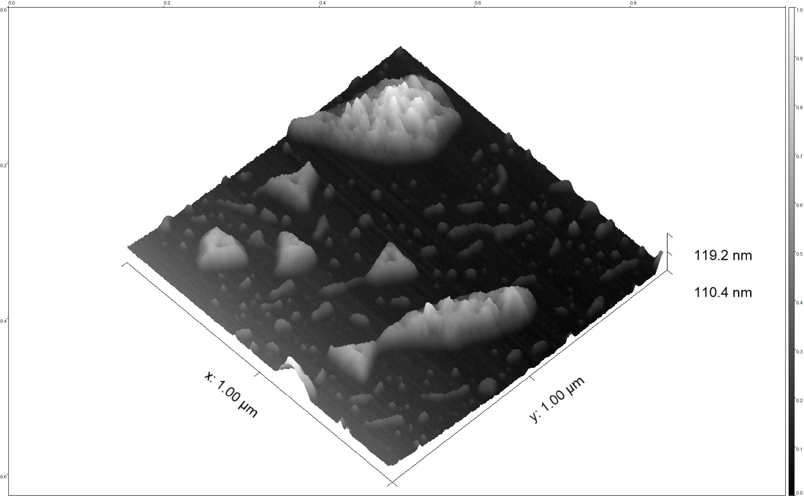
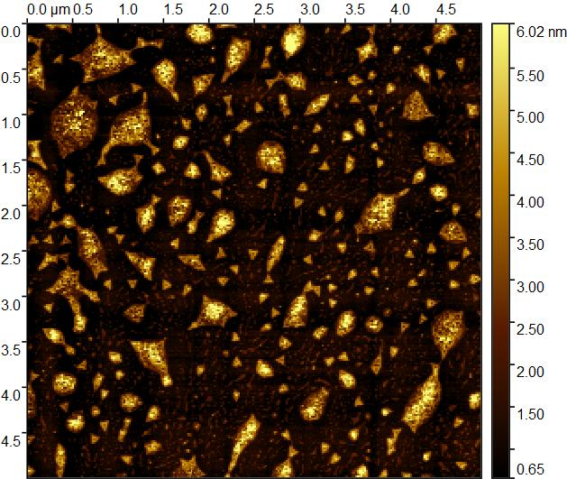
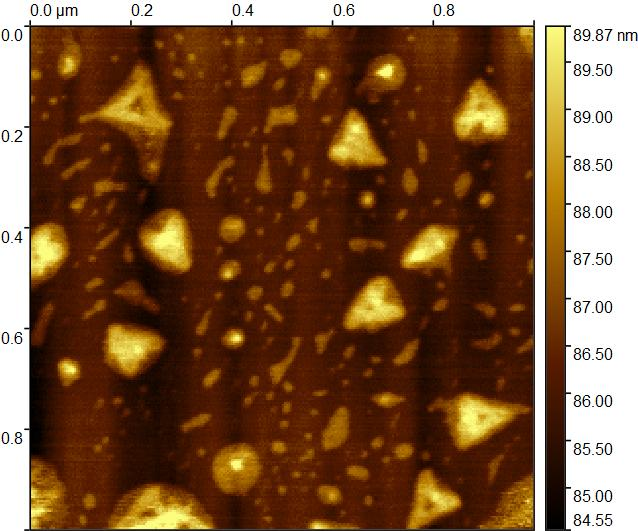
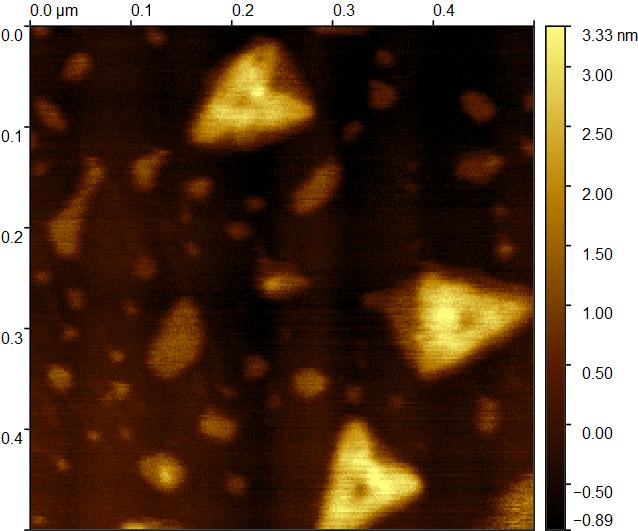
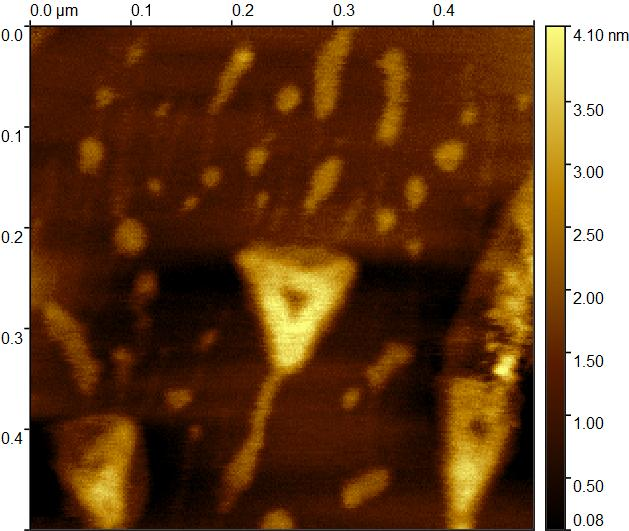

Introduction

DNA origami folding
3nM from paper
| 20μL | 50 | 100 | 500 | |
| Staple | ||||
|---|---|---|---|---|
| 500nM edge (to 30nM) | 1.2 | 3 | 6.3 | 31.5 |
| 250nM mid (to 30nM) | 2.4 | 6 | 12.6 | 63 |
| Scaffold | ||||
| 100nM M13mp18 (to 3nM) | 0.6 | 1.5 | 3.15 | 15.75 |
| Buffer | ||||
| 10xTAE (to 1x) | 2 | 5 | 10.5 | 52.5 |
| 50mM MgCl2 (to10mM) | 4 | 10 | 21 | 105 |
| ddH2O | 8.6 | 21.5 | 45.15 | 225.75 |
| Annealing : ~80oC 90 min => 25oC | ||||

Purification: 100 kDa MWCO, Amicon, Millipore
- Prepare washing buffer: H2O 7mL 10X TAE 1 mL 50mM MgCl2 2 mL to 10 mL
- Apply 500μl washing buffer into the tube and close the lid to rinse an Amicon Ultra-0.5 Centrifugal Filter Devices. Spin at 4,500 g, 25°C 7min
- Load 400ul samples and 100ul washing buffer to Amicon Ultra-0.5 Centrifugal Filter Devices, 4,500 g/rcf, 25°C 8min
- Wash the left two more times with 450ul washing buffer, spin for 4,500 g, 25°C 8min
- To recover the concentrated solute, place the Amicon Ultra filter device upside down in a clean microcentrifuge tube. Place in a centrifuge, aligning the open cap towards the center of the rotor; counterbalance with a similar device. Spin for 5minutes at 4,500g to transfer the concentrated sample from the device to the tube.
Add aptamer on DNA origami triangle
- After DNA origami purification mix it with 6.3 μL aptamer
- After mixing put it at 37°C for 2 hr
Check by gel electrophoresis
- Pour 22mL of 1x TAE and 0.2g of agarose powder into a small serum bottle and mix well.
- Microwave until boiling, repeating the process three times, then mix thoroughly again.
- Pour the gel into a conical flask located in the EtBr area, preparing to add EtBr.
- Extract 2μL of EtBr from the container (inside the silver canister). Make sure to handle external items with clean hands while anything potentially contaminated remains inside.
- Drop the EtBr into the gel in the conical flask, inserting the pipette tip directly into the gel layer before adding the solution. Keep the gel temperature around 60°C while adding EtBr. Mix thoroughly, then pour the mixture into the mold.
- Insert a graduated comb into the mold (the comb will create eight wells) and allow it to solidify for about 15 minutes.
- Once solidified, carefully pull out the comb vertically. Place the transparent mold with purple-striped markings into the electrophoresis tank, ensuring it is submerged in the buffer. Set the slider to "Half" but do not turn on the power switch.
- Prepare the samples and labeling materials in a clean area. Use a pipette to draw 10μL of the sample, ensuring it is well-mixed by repeatedly drawing and releasing.
- Gently release the sample into the well created by the comb, avoiding any puncturing of the gel. Insert the pipette tip slightly, then carefully release the sample.
- After confirming the gel is intact, turn on the power, cover the setup with a lid and aluminum foil to avoid exposure to light.

AFM sample
- Use a freshly cleaved mica sheet (for instance, a 12 mm mica disc* glued to a metal puck) and incubate it with 20 μl of folding buffer (1x FB: 1x TAE supplemented with 10 mM MgCl2) for 1 minute.
- Add about 5 μl volume sample to the buffer on the mica. Tilt the mica sheet carefully in all directions to dis-tribute the sample all over the surface and let it incubate for another 2 minutes.
- Take a tweezer and dip your mica sheet briefly into the ethanol/water bath. Directly afterwards transfer it to the ethanol bath and keep it there for a few seconds.
Result
3D model picuture
AFM




Reference
Kielar, C., Yang, X., Xu, X., Zhu, S., Gorin, N., Grundmeier, G., Möser, C., Smith, D. M., & Keller, A. (2019). Effect of staple age on DNA origami nanostructure assembly and stability. Molecules, 24(14), 2577.